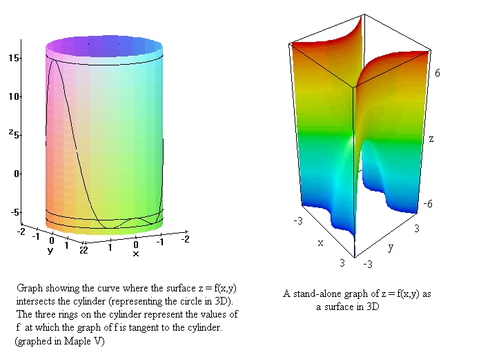

The curve at which the graph of f(x,y) - shown at
right - intersects the cylincer, relates to the maxima and minima
in an obvious way: The highest and lowest points of the
intersection curve do indeed give the maximum and mininimum
values of f on the circle.
The Maple V code for creating the above graph on the left is as
follows:
>with(plots):
>C := spacecurve( [ 2*cos(t), 2*sin(t),
4*(8*cos(t)^4-3*cos(t)^2-1) ], t=0..2*Pi, color=black):
>C1 := spacecurve( [ 2*cos(t), 2*sin(t), -5.1 ], t=0..2*Pi,
color=black):
>C2 := spacecurve( [ 2*cos(t), 2*sin(t), -4 ], t=0..2*Pi,
color=black):
>C3 := spacecurve( [ 2*cos(t), 2*sin(t), 16 ], t=0..2*Pi,
color=black):
>T := cylinderplot( 2, theta=0..2*PI, z=-6..17 ):
>display3d( { T, C, C1, C2, C3 } );